Tecnologías
Para este proyecto he partido del ejemplo presentado en el proyecto 10 que es una adecuación del código original de Evan que se puede encontrar en este link Y cuyo código fuente lo encuentran en github. Lo que se está realizando es un estudio de la aplicación de la luz. En este caso pbservamos que la luz no cuenta
A continuación encontramos un poco de contexto para entender la complejidad del proyecto y todo lo realizado
Pipeline Original
El proyecto, al igual que el curso, se desarrolla completamente en WebGL. Esta tecnología utiliza una mezcla de procesamiento en CPU y GPU para dar como resultado escenas interactivas en 2D y 3D. El marco habitual de el despliegue de escenas en WebGl de manera MUY SIMPLIFICADA sigue la siguiente lógica.
Se describen los objetos y todas sus propiedades en un modelo tridimensional. En espécifico se realizan dibujos de superficies por medio de triangulos, puntos o líneas (Se puede incluso en polígonos), colores y texturas. Esta información se le pasa a un primer programa llamado VERTEX SHADER que calcula por medio de proyecciones, la posición de vertices en el plano de la pantalla junto con los polígonos creados. A este primer programa debemos darle la posición de todos los vertices que forman las figuras que estamos creando
Un segundo programa FRAGMENT SHADER cálcula para cada pixel los colores.
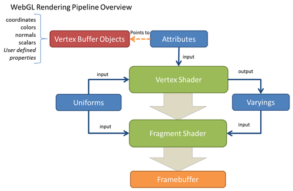Imágen tomada de https://www.safaribooksonline.com/library/view/webgl-beginners-guide/9781849691727/ch02s02.html
Ray tarcing
Este nuevo modelo cambia completamente la filosofía. Dibujar los elementos dependen de las fuentes de luz y como estas afectan los objetos. No encontré mejor manera de describirlo que robandome un vídeo.
Consiste en calcular, que de la fuente de luz se envían multiples rayos que van rebotando un determinado de veces en los objetos e iluminandolos. En ese transcurso calculamos los colores gracias a esos rebotes. Es claro que la ciencia detrás es algo más copleja pero la idea es esa. Debido a las limitaciones que nosotros tenemos impuestas por el Pipeline de WebGl, el proyecto base utiliza una ideología similar que describo en la siguiente ilustración
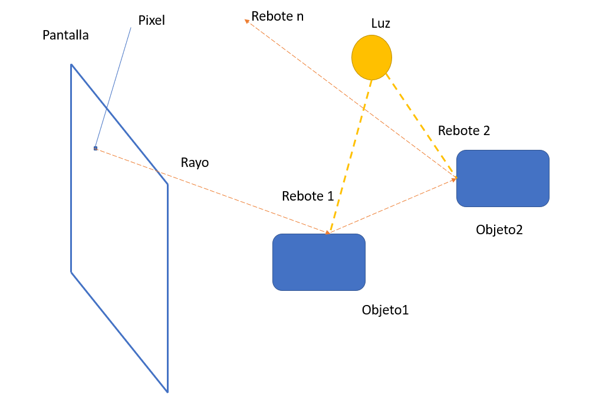Los rayos los enviamos nosotros desde cada pixel, calculamos el aporte de la fuente de luz y realizamos un determinado número de rebotes. De manera general es lo que se hace. Continuemos con el uso que le damos a esta técnica.
Contexto
Por interés de una arquitecta que trabajo en el diseño profesional de luces, se requiere realizar un software para el cálculo realista de luces en ambientes. Como punto de referencia se toma el software DiaLux antes descrito.
En principio se quiere agregar más y más características físicas de luminotecnia en la iteracción de objetos y luces en el proyecto. De momento estamos aplicando 3 elementos
Iluminancia
Es una magnitud característica del objeto iluminado, que indica la cantidad de luz que incide sobre su superficie, al ser iluminado por la fuente.
E = I/d2
E = nivel de iluminación en lux
I = Intensidad luminosa en candelas
d = distancia en metros.
Luminancia
La luminancia es la relación entre la intensidad luminosa y la superficie aparente. La superficie aparente es la proyección dela superficie real sobre un plano perpendicular a la dirección de la mirada. El valor de la superficie aparente se calcula como producto de la superficie real por el coseno del ángulo que forma la dirección de la mirada con la perpendicular a dicha superficie (cos Θ).
L = I/ (S x cos Θ )
I = Intensidad luminosa en candelas.
S = Superficie en cm2 o m2
L = Luminancia en cd/cm2 o cd/m2
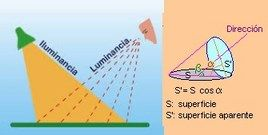
Archvos IES
Los archivos de datos que se crean mediante el IES (Illuminating Engineering Society) formato estandarizado fotométrica son llamados archivos IES; por lo que se consideran archivos IES fotométricos IES archivos de datos. Estos archivos guardan las cantidades de luz y mediciones, por lo que son útiles para la simulación de sistemas de iluminación antes de ser instalados en los edificios. Aparte de eso, archivos IES también son útiles para el examen de la iluminación fuente de luz para los sitios al aire libre como carreteras, etc. Desde que se ocupan principalmente de los datos de iluminación y fotometría, muchos programas de 3D utilizan este formato de archivo, así como la mayoría de los fabricantes de iluminación publican este archivo formato. archivos IES lo general se abren y ver con el uso de Autodesk Revit Architecture 2013, una aplicación más usada por los diseñadores y arquitectos. Permite a los usuarios crear diseños arquitectónicos de la más alta calidad y precisión. Esta aplicación se ejecuta en un sistema operativo Windows.
En cocreto el archivo moldea el comportamiento de los luces dada una dirección y ángulos de desplazamiento. Un archivo IES abierto con un SW especializado me da esta información de la siguiente manera
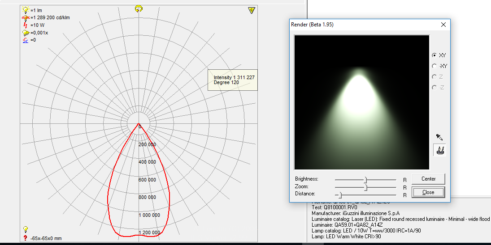Es claro como nos dice como se debe comportar la luz a diferentes ángulos que golpean al centro de la fuente.
Resultados
Se han logrado incorporar estos elementos en WebGl permitiendo cargar información de archivos IES en un ambiente donde en principio solo s epueden crear, esferas, cubos y cilindros. Las luces cuentan con parámetros de localización, color y orientación manipulables en ejecución. También cuenta con información IES aunque esta de momento solo se tienen 3 tipos de archivos en los cuales se pueden seleccionar
En función de poder realizar una validación del éxito o fracaso de las visualizaciones hemos partido de 2 programas exernos para poder, de manera cualitativa, emitir un juicio. Estos programas son Dialux que permite generar una escena e incluir luces, y IES Viewer que permite ver el patrón de radiación de una luz determinada . Además hemos consultado a una experta en el uso de este tipo de software para conocer su apreciación
A continuación se muestra como se carga una sola Luz en cada software pegado a la pared para ver su patrón y el resultado de IES Viewer
| 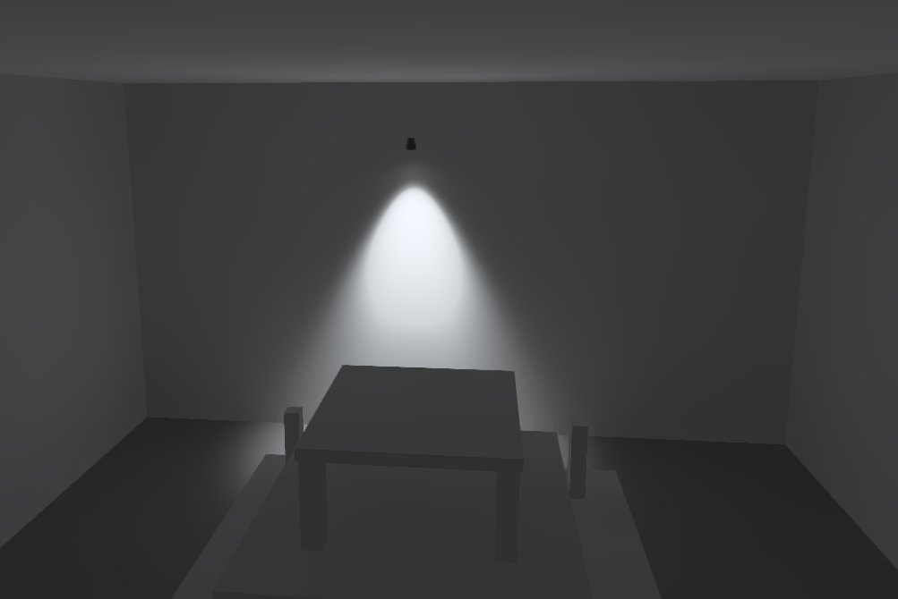 | 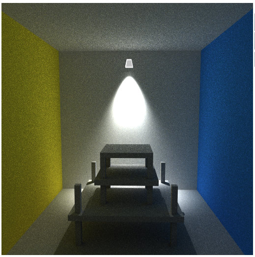 | 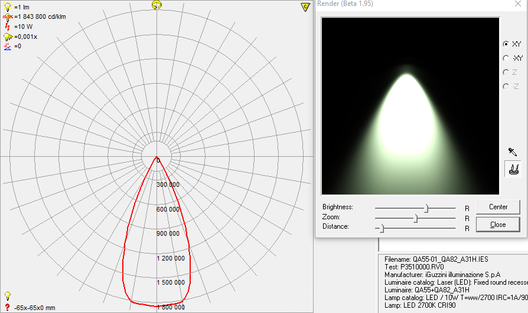 |
| 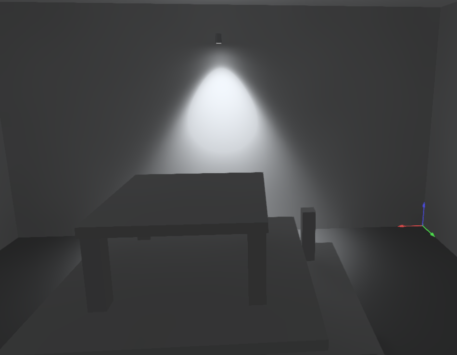 | 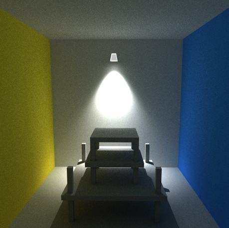 | 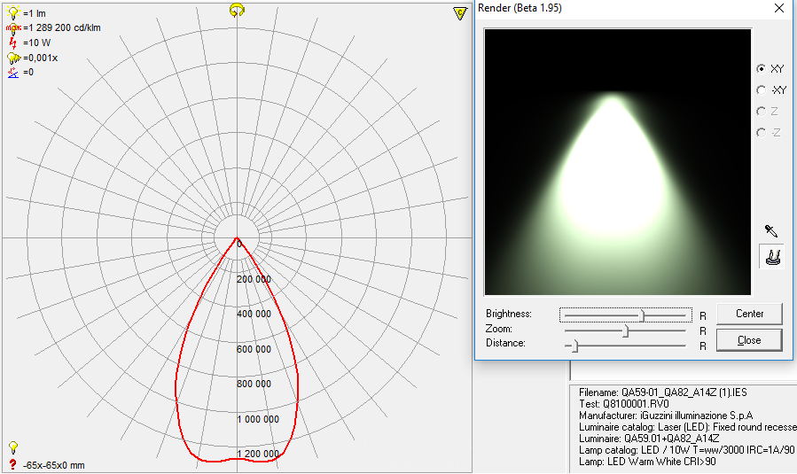 |
| 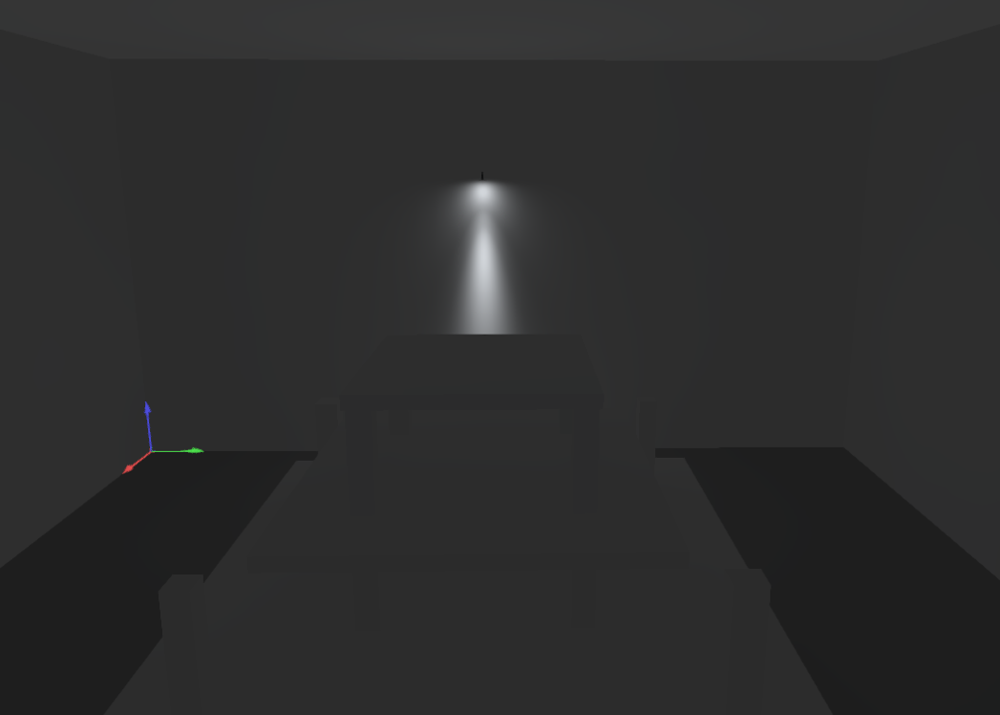 | 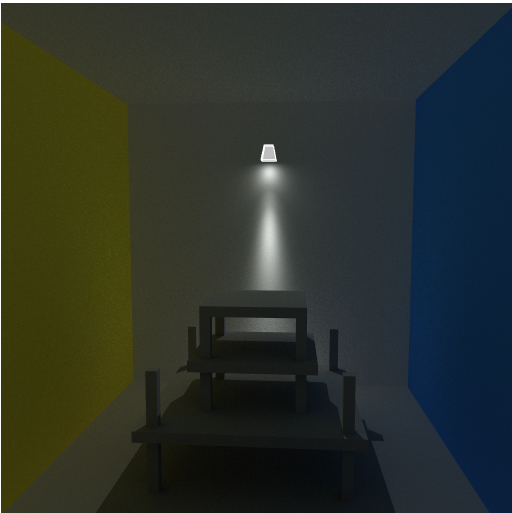 | 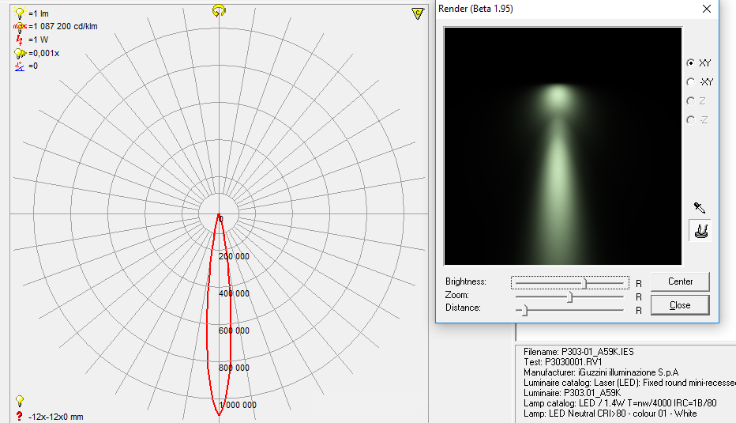 |
Otros ejemplos mostrando entre Dialux y nuestro ejemplo en Ray tracing
| 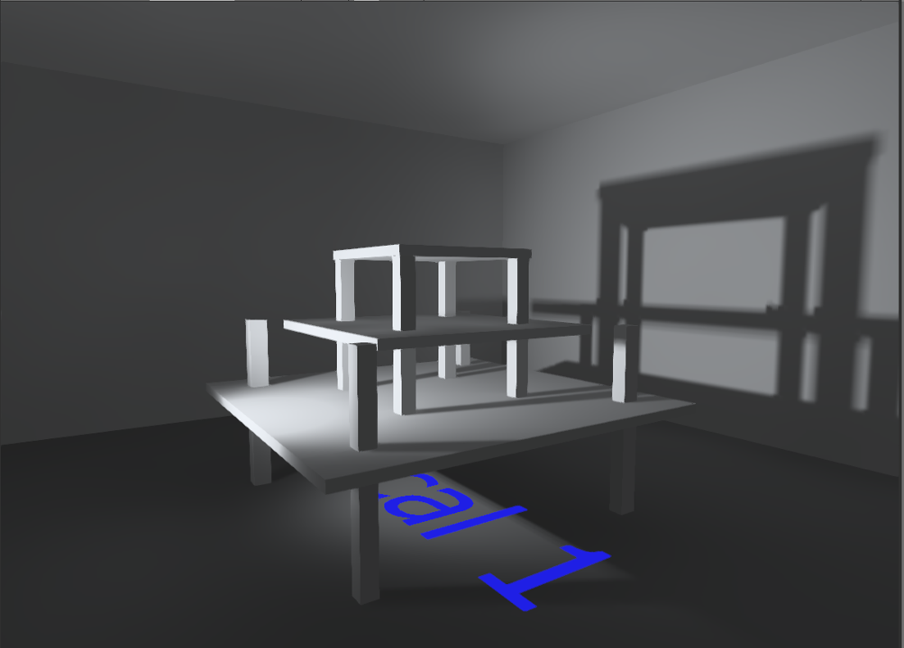 | 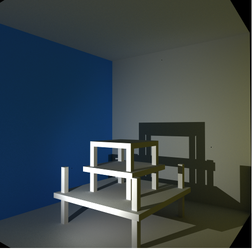 |
| 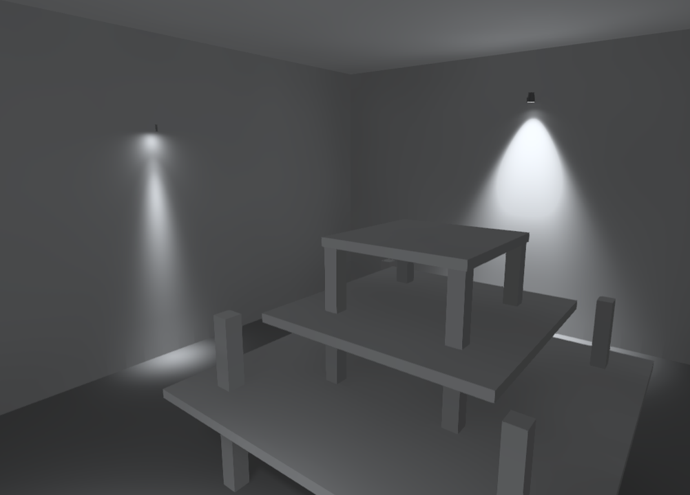 | 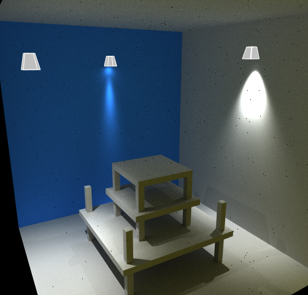 |
Opinion de la experta
Conclusiones
El resultado es cercano sin embargo es necesario ajustar varias cosas.
- Manejabilidad de las luces.
- Carga de archivos IES.
- Carga de modelos para otros espacios.
- Manejo de la sombra.
|
Material:
with glossiness factor: 0 < < 1
Environment:
Load preset scene:
Luminotecnia
Empiezo a trabajar en una librería que permita introducir principios físicos de luminotecnia para darle realismo a la aplicación. En específico se quiere tener en cuenta los siguientes aspectos:
- Flujo luminoso: Flujo luminoso es la cantidad total de iluminación emitida por una fuente de luz en una unidad de tiempo, la unidad de medida es el lumen (lm). Se utiliza para indicar la cantidad de luz manifestada en una superficie o para señalar la reproducción luminosa de una fuente. Cuando la fuente de luz es una lámpara el flujo luminoso no se reparte de manera uniforme. El flujo luminoso Փ es un índice representativo de la potencia luminosa de una fuente de luz. Փ = lumen (lm)..
- Eficacia luminosa: La eficacia luminosa describe el rendimiento de una lámpara. Se expresa mediante la relación del flujo luminoso entregado, en lumen y la potencia consumida, en vatios. El valor teórico máximo alcanzable con una conversión total de la energía a 555 nm sería 683 lm/W. Las eficacias luminosas realmente alcanzables varían en función del manantial de luz, pero quedan siempre por debajo de este valor ideal.
- Intensidad luminosa.La intensidad luminosa de una fuente de luz en una dirección dada, es la relación que existe entre el flujo luminoso contenido en un ángulo sólido cualquiera, cuyo eje coincida con la dirección considerada y el valor de dicho ángulo sólido expresado en estereoradianes. Su unidad es la candela (cd).
- Iluminancia: La iluminancia es un índice representativo de la densidad del flujo luminoso sobre una superficie. Se define como la relación entre el flujo luminoso que incide sobre una superficie y el tamaño de esta superficie. A su vez la iluminancia no se encuentra vinculada a una superficie real, puede ser determinada en cualquier lugar del espacio. La iluminancia se puede deducir de la intensidad luminosa. Al mismo tiempo disminuye la iluminancia con el cuadrado de la distancia de la fuente de luz (ley de la inversa del cuadrado de la distancia). Su unidad es el lux..
- Luminancia:Mientras que la iluminancia nos describe la potencia luminosa que incide en una superficie, vemos que la luminancia nos describe la luz que procede de esa misma superficie. A su vez dicha luz puede ser procedente de la superficie misma (p.ej. en el caso de la luminancia de lámparas y luminarias). También vemos que la luminancia se encuentra definida como la relación entre la intensidad luminosa y la superficie proyectada sobre el plano perpendicularmente a la dirección de irradiación. Pero es posible que la luz sea reflejada o transmitida por la superficie. En el caso de materiales que reflejan en forma dispersa (mateados) y que transmiten en forma dispersa (turbios), es posible averiguar la luminancia a base de la iluminancia y el grado de reflexión (reflectancia) o transmisión (transmitancia). La luminosidad está en relación con la luminancia; no obstante, la impresión verdadera de luminosidad está bajo la influencia del estado de adaptación del ojo, del contraste circundante y del contenido de información de la superficie a la vista. La luminancia L de una superficie luminiscente resulta de la relación entre la intensidad luminosa I y su superficie proyectada Ap.